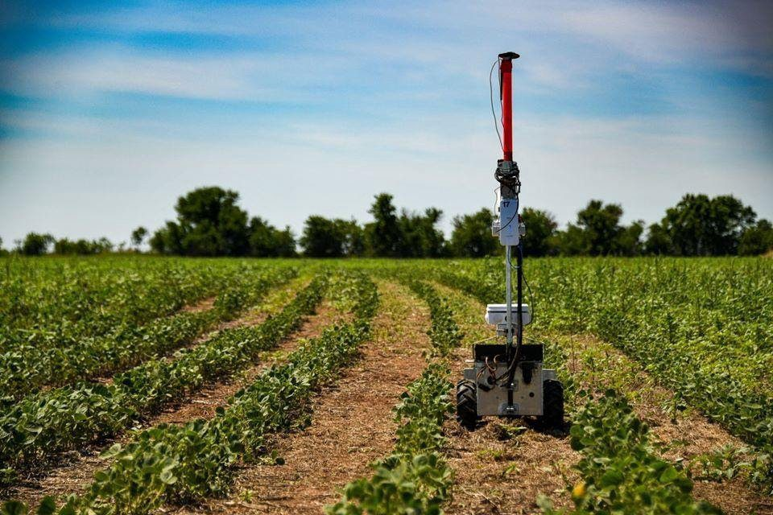
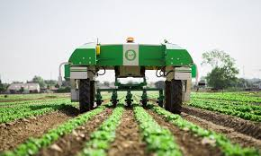
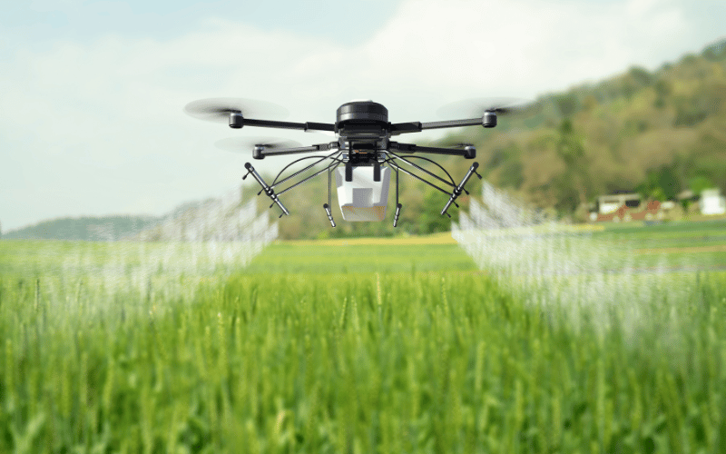

Controle de Pragas e Ervas Daninhas:
Saiba mais
Sistemas robóticos podem identificar e remover pragas e ervas daninhas de forma precisa, minimizando o uso de pesticidas e herbicidas.

Aumento da produtividade nas plantações e plantios
Saiba mais
A automação permite que as operações agrícolas sejam realizadas de forma mais rápida e precisa, otimizando o uso de recursos e aumentando a produção.

Drones no campo
Saiba mais
Monitoram as plantações, coletam dados sobre o solo e as condições climáticas, e aplicam produtos de forma precisa e eficiente.
Eles auxiliam na gestão do cultivo e identificam problemas em tempo real